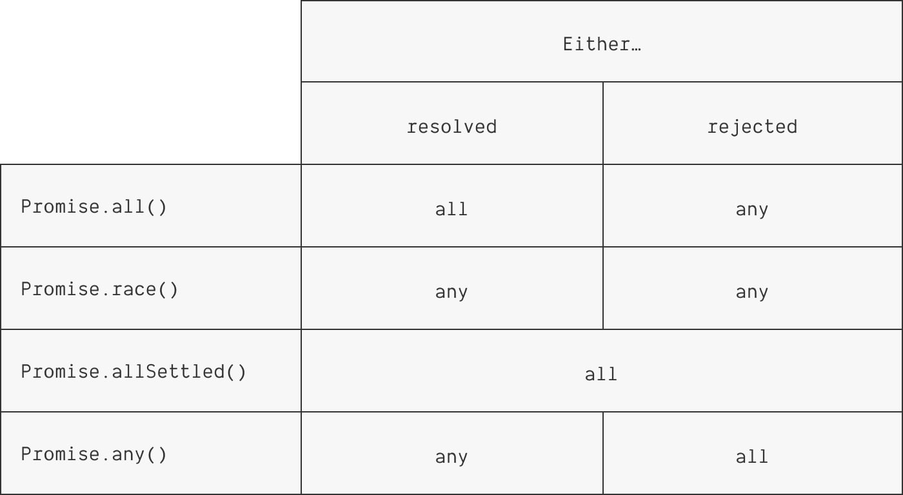

## Разбираемся c промисами в JavaScript <br/> <small>И немного про JS под капотом</small>
<h3>Хто я?</h3> <div style="display: flex; justify-content: space-between; align-items: center;"> <img class="r-frame" style="background: rgba(255, 255, 255, 0.1); float: left" height="300px" data-src="./images/hto-ja.png" alt="Who am I" /> <div>👋 Евгений, учусь на Прикладной информатике БГУ</div> </div> <small>Работаю Frontend-разработчиком (JS/TS, Angular/React)</small> <small>https://github.com/TELEUZI</small>
### Как исполняется код на JavaScript? JavaScript является <em> однопоточным </em>; в нём может быть выполнено только что-то одно за раз. <p class="fragment">Но он также <em>асинхронный</em>, то есть, спроектирован таким образом, что может реагировать на события и вызывать функции, выполнение которых может занимать длительный период времени.</p>
### The Event Loop
### Контекст выполнения и Стек вызовов Контекст выполнения — это абстрактное понятие окружения, в котором код оценивается и выполняется. ### <p class="fragment">Под стеком вызовов подразумевается структура LIFO, которая используется для хранения всех контекстов выполнения, созданных на протяжении исполнения кода.</p> <p class="fragment">В JavaScript имеется только один стек вызовов.</p>
Как работает вызов функций
Событийный цикл
### The Event Queue В очередь помещаются обработчики событий: - Пользовательские события - События браузера - События веб-сокетов - Сетевые события - setTimeout(), setInterval() - Promises!
### Callbacks
Мы можем создавать обработчики событий, которые попадут в очередь на выполнение. Такие обработчики называются функциями обратного вызова (callback). <pre class="fragment"><code data-trim data-noescape> document.addEventListener('DOMContentLoaded', function() { console.log('The page is ready!'); }); </code></pre> <pre class="fragment"><code data-trim data-noescape> setTimeout(function() { console.log('One second has passed.'); }, 1000); </code></pre>
Задача: создать цепочку из событий. <pre><code data-trim data-noescape class="JavaScript"> fillKettle(); // wait until it's finished, then... boilWater(); // wait until it's finished, then... addLeaves('green'); // wait until it's finished, then... steepTea('1 minute'); </code></pre>
Используем функции обратного вызова: <pre><code data-trim data-noescape class="JavaScript"> fillKettle(function() { boilWater(function() { addLeaves('green', function() { steepTea('1 minute'); }); }); }); </code></pre>
<strong class="scare">Callback Hell!</strong> 😱 <pre><code data-trim class="JavaScript"> fillKettle(function() { boilWater(function() { addLeaves('green', function() { steepTea('1 minute', function() { pourTea(function() { serveTea(function() { drinkTea(); }); }); }); }); }); }); </code></pre>
### Promises
Promises (промисы) являются ключом к решению проблемы callback hell.
> Интерфейс Promise представляет собой обёртку для значения, неизвестного на момент своего создания. Он позволяет обрабатывать результаты асинхронных операций так, как если бы они были синхронными: вместо результата возвращается обещание получить его позже. <small>https://developer.mozilla.org/ru/docs/Web/JavaScript/Reference/Global_Objects/Promise</small>
### Создание промисов Для создания объектов `Promise` существует специальная функция-конструктор. <pre><code data-trim data-noescape class="JavaScript"> const myPromise = new Promise(); </code></pre>
Конструктор принимает единственное значение, функцию-коллбек, которая выполняется немедленно, и может выполнять асинхронные действия. В качестве аргументов этой функции автоматически приходят две другие: <em>resolve</em> и <em>reject</em> <pre><code data-trim data-noescape class="JavaScript"> const myPromise = new Promise(function (resolve, reject) { setTimeout(function() { resolve(); }, 1000) }); </code></pre>
Промис всегда находится в одном из трёх состояний: - _pending_: начальное состояние, не исполнен и не отклонён. - _fulfilled_: операция завершена успешно. - _rejected_: операция завершена с ошибкой.
У каждого объекта `Promise` существует метод `then()`, который принимает callback, который будет вызван после перехода промиса в состояние _fulfilled_. <pre><code data-trim data-noescape class="JavaScript"> doThis().then(doThat); </code></pre>
Состояние _fulfilled_ наступает, когда внутри функции промиса вызван метод resolve `resolve()` <pre><code data-trim data-noescape class="JavaScript"> const myPromise = new Promise(function (resolve, reject) { setTimeout(function() { resolve(); }, 1000); }); myPromise.then(() => console.log('All done!')); console.log('Starting the operation...'); </code></pre> <pre class="fragment"><code data-trim data-noescape class="markdown"> Starting the operation... All done! </code></pre>
`then()` всегда возвращает промис, поэтому мы можем создавать цепочку неограниченной длины. <pre><code data-trim data-noescape class="JavaScript"> doThis() .then(doThat) .then(doSomethingElse); </code></pre>
В функцию `resolve()` мы можем передать аргумент, который будет получен методом `then()` <pre><code data-trim data-noescape class="JavaScript"> const myPromise = new Promise((resolve, reject) => { setTimeout(() => { resolve('Hong Shui Oolong'); }, 1000) // Takes 1 second to resolve }); myPromise.then(tea => console.log(`Today's tea is ${tea}`)); </code></pre> <pre><code data-trim data-noescape class="markdown"> Today's tea is Hong Shui Oolong </code></pre>
Do you remember him? <pre><code data-trim class="JavaScript"> fillKettle(function() { boilWater(function() { addLeaves('green', function() { steepTea('1 minute', function() { pourTea(function() { serveTea(function() { drinkTea(); }); }); }); }); }); }); </code></pre>
This is him now. <pre><code data-trim data-noescape class="JavaScript"> fillKettle() .then(boilWater) .then(() => addLeaves('green')) .then(() => steepTea('1 minute')) .then(pourTea) .then(serveTea) .then(drinkTea); </code></pre> <br/> <p class="fragment">Feel old yet?</p>
И все такие...
### fetch
`fetch()` это функция Web API, которая позволяет выполнять HTTP запросы. Она возвращает объект `Promise`, который автоматически вызывает resolve по получении данных.
Результат работы `fetch()` должен быть конвертирован в какой-нибудь формат данных, например JSON, перед тем, как может использоваться.
Пример использования `fetch()` для получения данных с сервера: <pre><code data-trim data-noescape class="JavaScript"> fetch('https://jsonplaceholder.typicode.com/todos/1') .then(response => response.json()) .then(json => console.log(json)) </code></pre> <pre class="fragment"><code data-trim data-noescape class="json"> { "userId": 1, "id": 1, "title": "delectus aut autem", "completed": false } </code></pre>
### Обработка ошибок
### Catch У каждого промиса имеется метод `catch()`, с помощью которого можно отлавливать ошибки. <pre><code data-trim data-noescape class="JavaScript"> boilWater() .catch(() => console.error('There was a problem making tea.')) </code></pre>
Если промис не может выполниться и происходит ошибка, то вызывается функция `reject()`, а не `resolve()`. И все вызовы `then()` пропускаются, вместо них вызывается ближайший метод `catch()`. <pre><code data-trim data-noescape class="JavaScript"> fillKettle() .then(boilWater) .then(() => addLeaves('green')) .then(() => steepTea('1 minute')) .catch(() => console.error('There was a problem making tea.')) </code></pre>
`then()` и `catch()` будут вызваны, даже если промис уже выполнился. <pre><code data-trim data-noescape class="JavaScript"> const done = new Promise(resolve => resolve('hello')) done .then(greeting => console.log(`${greeting}, my friend!`)) </code></pre> <pre class="fragment"><code data-trim data-noescape class="markdown"> hello, my friend! </code></pre>
Статический метод `Promise.resolve()` <pre><code data-trim data-noescape class="JavaScript"> const done = Promise.resolve('hello') done .then(greeting => console.log(`${greeting}, my friend!`)) </code></pre>
### Finally Если нам не важен результат промиса, а важен сам факт его завершения, удобно использовать метод `finally()`. <pre><code data-trim data-noescape class="JavaScript"> let isMakingTea = true; boilWater() .then(steepTea) .catch(() => console.error('Failed to make tea.')) .finally(() => { isMakingTea = false; }); </code></pre>
### Композиция промисов
Метод `Promise.all()` возвращает массив значений от всех промисов, которые были ему переданы. Возвращаемый массив значений сохраняет порядок оригинального перечисляемого объекта, но не порядок выполнения промисов.
`Promise.all()` полезен, когда необходимо дождаться завершения множества асинхронных операций, например, загрузка ресурсов игры. <pre><code data-trim data-noescape class="JavaScript"> const imageLoader = loadImages(); const soundLoader = loadSounds(); const movieLoader = loadMovies(); const loader = Promise.all([ imageLoader, soundLoader, movieLoader, ]); loader.then(startGame); </code></pre>
Существуют и другие методы для композиции, `race()`, `any()`, `allSettled()` 
### Await
Введение в язык ключевого слова `await` позволило писать асинхронные функции в стиле синхронных.
> Оператор await заставляет функцию, объявленную с использованием оператора async, ждать выполнения Promise и продолжать выполнение после возвращения Promise значения. <small>https://developer.mozilla.org/ru/docs/Web/JavaScript/Reference/Operators/await</small>
Функция, в которой используется `await` должна быть помечена как `async`. Это гарантирует, что она всегда вернёт промис. <pre><code data-trim data-noescape data-line-numbers="|1|7|" class="JavaScript"> async function getDataFromServer() { const response = await fetch(`https://jsonplaceholder.typicode.com/ todos/1`) const json = await response.json(); return json; } async function main() { console.log(await getDataFromServer()); } main(); </code></pre>
Сравнение синтаксиса
Ошибки await отлавливаются блоками try, catch. <pre><code data-trim data-noescape class="JavaScript"> async function main() { try { await fillKettle(); await boilWater(); await addLeaves('green'); await steepTea('1 minute')); drinkTea(); } catch (error) { console.error('There was a problem making tea.'); } } main(); </code></pre>
### Top Level Await
Старое поведение: <pre><code data-trim data-noescape class="JavaScript"> await Promise.resolve(console.log('🎉')); // → SyntaxError: await is only valid in async function (async function() { await Promise.resolve(console.log('🎉')); // → 🎉 }()); </code></pre> <p class="fragment"> Новое:</p> <pre><code data-trim data-noescape class="JavaScript"> await Promise.resolve(console.log('🎉')); // → 🎉 </code> </pre> <p class="fragment"> Динамический импорт, инициализация ресурсов и многое другое.</p> <pre class="fragment"><code data-trim data-noescape class="JavaScript"> const strings = await import(`/i18n/${navigator.language}`); const connection = await dbConnector(); </code></pre>
### Другие имплементации
Идея промисов не нова, они поддерживаются языком нативно с версиии ES6, однако существуют и другие имплементации. - <a href="https://api.jquery.com/jquery.deferred/">jQuery Deferred</a> - <a href="http://bluebirdjs.com/docs/getting-started.html">Bluebird</a> - <a href="https://github.com/kriskowal/q">Q</a> Официальный стандарт промисов носит название _Promises/A+_.
### finally()! Спасибо за внимание